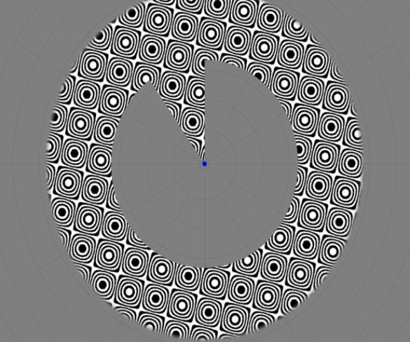
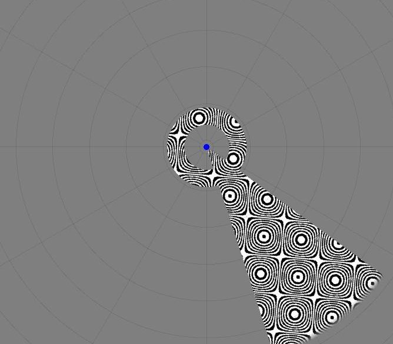

We collected data from 15 congenitally profoundly/severely deaf participants and 15 hearing participants. One deaf participant was excluded from the MRI analysis due to excessive motion in the scanner. Psychophysics data was used from this participant. Psychophysics data was not collected from 1 male deaf participant as a result of time restrictions at the experimental sessions. Typically, severely or profoundly deaf people will typically learn some sign language at some stage in their life from their deaf peers, even when they use spoken language as their primary form of communication. As we were interested in isolating the effect of auditory deprivation on the visual processing stream, we were keen to minimise any impact of the use of a visual language. Thus deaf participants were contrasted with hearing participants who also knew sign language (the majority of whom were sign language interpreters or teachers of the deaf). As the brain is most plastic in infants, we imposed the additional criteria that participants had to have begun to learn sign language after the age of 10 years, in order to limit this effect of early exposure. Participants were right handed and screened for additional neurological and psychiatric concerns. During testing, all participants' vision was corrected to normal. Table 1 displays the participants' characteristics. Research was approved by UCL Ethics Committee.
We tested participants' visual acuity in the central, middle and peripheral visual field using a computer based task. Two pairs of co-linear dots appeared on either side of a fixation cross, and the participants were required to indicate via a button press which pair of dots were misaligned. A staircase procedure was used to estimate participants' acuity: if the participants performed well, the task was made more difficult by reducing the misalignment of the dots, whereas if they performed poorly, the task was made easier by increasing the misalignment. Depending on the task condition, the dots appeared in the central, middle or peripheral visual field, and participants completed each of these tasks in a random order.
We collected data at the Birkbeck UCL Centre for Neuroimaging. Participants had a structural brain scan taken. They then underwent three runs of functional MRI scanning. Specifically, a retinotopic mapping procedure was carried out which enables the functional delineation of different visual areas in the brain. For the purposes of this study we were interested in primary visual cortex (V1). Figure 1 gives an example of this stimuli. The high contrast black and white checkerboard patterns in these stimuli are used as they drive strong responses from visual cortex. The rotating ring and wedge mean all areas of the visual field will be covered in order to enable mapping. For the final functional run, participants viewed a full screen checkerboard for 2 seconds, followed by 29 seconds of a grey screen. This was in order to model the haemodynamic response (blood flow) through visual cortex, which improved model fitting. Figures 1 and 2 provide examples of these stimuli.
|  |  |
For each of these runs participants were required to monitor the colour of the fixation dot, and count how many times this changed from blue to red. This task was designed to ensure the participants maintained fixation, but was easy enough that all participants would be able to complete it, without it introducing group differences.
The structural data was analysed using FreeSurfer. This generates a cortical reconstruction in which white and grey matter are segmented. From this, cortical thickness can be calculated. Additionally the functional data is aligned with these cortical reconstructions for further analysis.
The functional MRI data was analysed in SPM8 and custom in-house built software. Following delineating primary visual cortex, we were able to generate a population receptive field size (pRF) at each visual eccentricity.